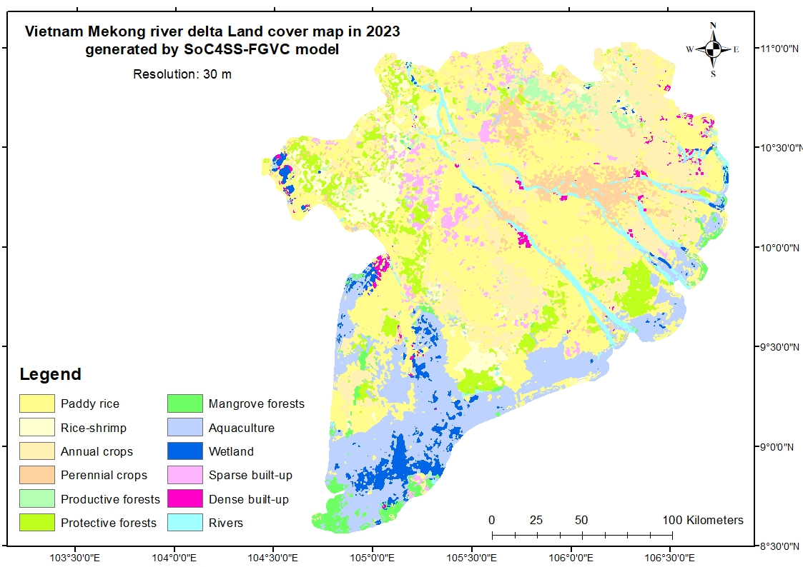

- Semi-supervised learning improves the discrimination of spectrally similar LULC classes in complex agricultural landscapes.
- A realistic validation strategy reduces overfitting and provides more reliable land-cover estimates.

1. Methodology Overview
- We proposed a semi-supervised framework that integrates multi-temporal remote sensing indices for land cover classification in data-scarce environments.
2. Key Results & Publications
- The proposed SoC4SS-FGVC model achieved 0.92 accuracy with only 500 labeled samples, outperforming supervised models (RF, SVM, CNN).